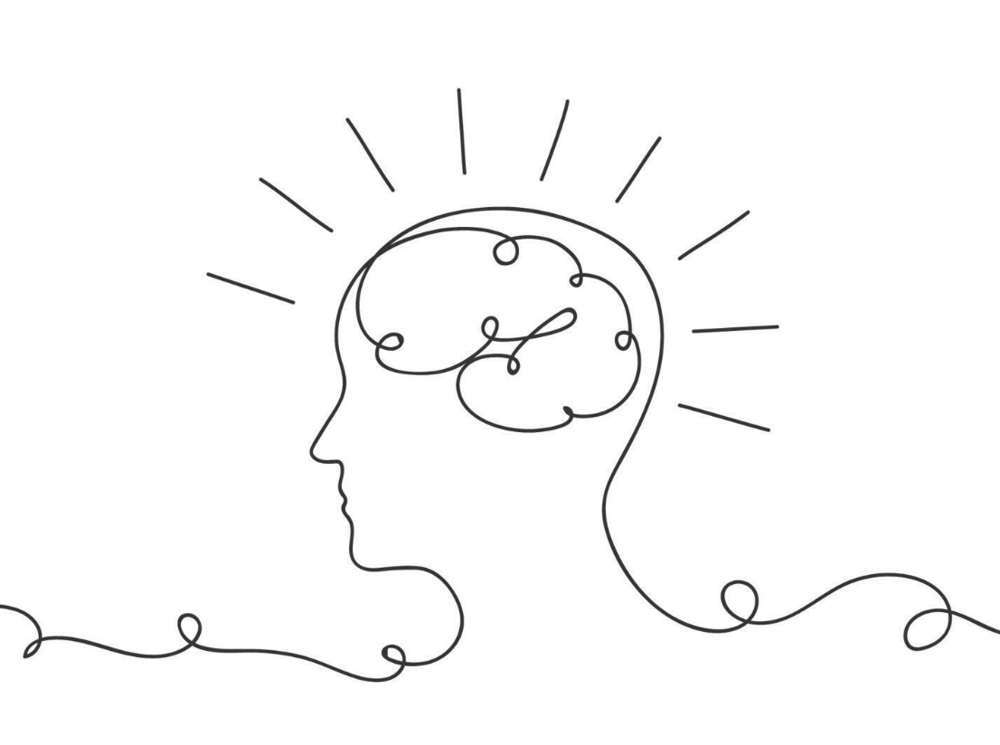
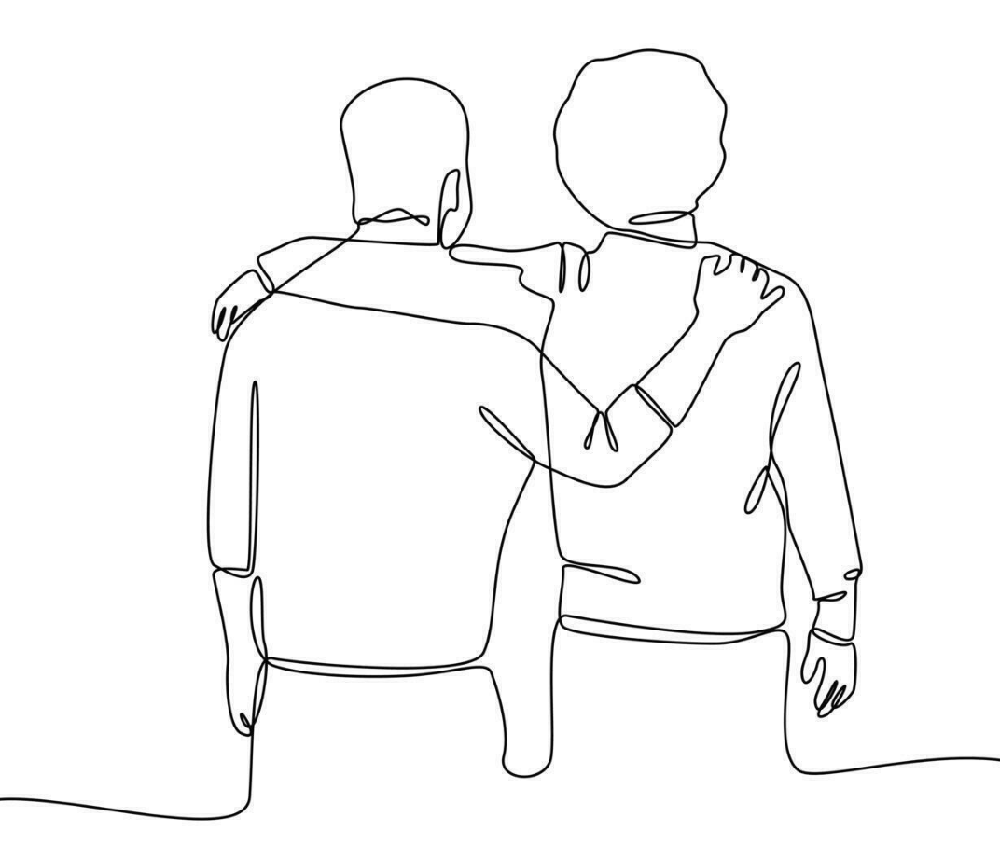
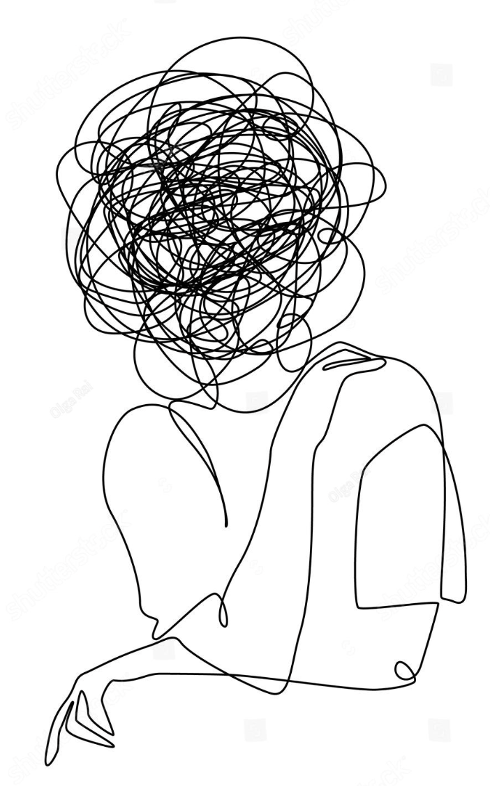

Psykiskt lidande uppstår inte av sig själv
Vi samspelar med andra och påverkas genom hela vårt liv av andra människor, samhällets normer och det som händer i vår omgivning. Ibland är psykiskt lidande till och med en sund respons på saker som händer i livet.

Nära relationer är betydelsefulla.
Hur nära och viktiga relationer ser ut, både de vi har nu och de vi haft tidigare, formar hur vi ser på oss själva och världen. Att utforska sina relationsmönster, som ibland inte är medvetna för oss, kan vara avgörande för att åstadkomma förändring gällande sitt mående.

Känslor är viktig information
Känslor, både positiva och negativa, är inte bara viktig information om hur vi mår utan också om vad vi behöver för att må bra och hur vi ska ta hand om oss själva.